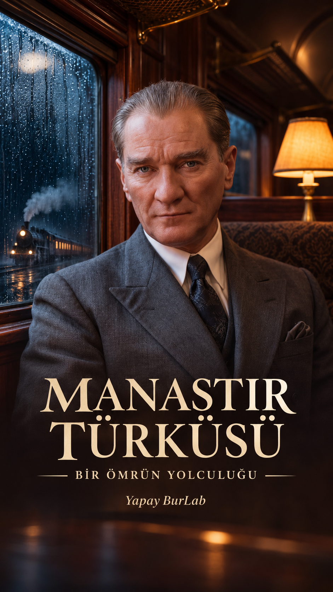

Bir türküden gece treni yolculuğuna
Manastır Türküsü klibinde görsel devamlılığı, kısa yüz performanslarını ve kesintisiz müziği nasıl bir araya getirdik?
Yapay BurLab · 7 Kasım 2026 · Onaylanan V12: 86,2 saniye

1. Önce sesi ve hikâyeyi sabitle
Bu projede kullanıcının onayladığı 86,2 saniyelik ana ses kaydı esas alındı. Hikâye: gece treni, okul hatıraları, fotoğraf, saz ve yolculuğa devam eden tren. Mekânlar ve dönem bir hayalî anlatının parçalarıdır.
- Kullanma hakkın olan müziği ve ses kaydını düzenleyicine aktar. Orijinali ayrı tut.
- İlk heceyi, kıta başlangıçlarını, enstrümantal bölümü ve son müzik cümlesini dinleyerek işaretle.
- Ana sesi tek kesintisiz kanalda bırak; görüntüleri bu kayıt üzerinde değiştir.
Bu rehber ses modeli eğitimi veya kusursuz ses klonlama reçetesi değildir. Farklı şarkılarda aynı performansın hatasız taşınacağı sözü verilemez.
2. Görselden videoya: bir planda tek hareket
Google Flow’da mevcut dikey görseli başlangıç karesi olarak seçtik. 9:16 görüntüler, 4–8 saniyelik kaynak planlar ve ölçülü hareketler kullandık. Kaynak süresi ile kurguda kullanılan süre aynı olmak zorunda değildir. Model ve kredi seçenekleri üretim ekranında kontrol edilir; bu sayfa sabit fiyat vaadi vermez.
- Önce yüz, kıyafet, ışık ve mekânı tutarlı olan kareyi seç.
- Bir ana hareket yaz: örneğin trenin ileri ilerlemesi veya suyun aşağı akması.
- Sonucu yalnız ilk karesinden değerlendirme. Gözler, eller ve hareket yönünü başlangıç–orta–sonda kontrol et.
- Bozulan parçayı kullanma. Temiz kısmı kes veya gerekli sahneyi yeniden üret.
Flow kaynaklarının sesleri son miks içinde kullanılmadı; onaylı ana şarkı devam etti.
3. Kısa yüz performansı: aynı fotoğraf, doğru ses parçası
OpenArt yüz denemelerinde farklı motorlar aynı kimliği korumadı. Son kurguda kabul edilen Aurora kaynakları kullanıldı; reddedilen Omni yüz denemeleri finale alınmadı. Daha yüksek çözünürlük veya daha yüksek maliyet, daha doğru yüz anlamına gelmedi.
- Onaylı yüz görselini kullan; ağzı örten el veya nesne olmasın.
- Söylenecek parçayı kelimenin başını kesmeden çıkar. Son miks içindeki konumunu not et.
- Önce kısa bir pilotu kontrol et; başarısız denemeyi arka arkaya ücretli üretme.
- Ses dalgası hizası doğru olsa bile dudakların kelimeye uygunluğunu ayrıca izle.
4. Onaylanan kurgunun ana durakları
| Aralık | Uygulama |
|---|---|
| 0–3,3 sn | Söyleyişle aynı kaynaktan açılış karesi. |
| 3,3–7,3 sn | Kabul edilen kısa söyleyiş. |
| 7,3–11,8 sn | Tren ara planı. |
| 11,8–16,3 sn | Havuz: bekleme süresi kısaltıldı. |
| 16,3–30,5 sn | Okul ve fotoğraf hatırası. |
| 30,5–56 sn | Yolculuk, ritim ve saz ara planları. |
| 56–62,5 sn | Çeşme tek kez kullanıldı. |
| 62,5–66,7 sn | İkinci kısa söyleyiş. |
| 66,7–72,5 sn | Yağmurlu tren profil karesi ve platformun sağlam başlangıcı. |
| 80,4–86,2 sn | Tren finali; 84,2 saniyeden itibaren kararma. |
Yüz kesmelerinde üst üste iki yüz bindiren geçişlerden kaçınıldı. Nesne ve mekân geçişlerinde seçici kısa çözünmeler kullanıldı. Her kesmeye efekt eklenmedi.
5. Son saz cümlesini bozma
Daha uzun kapanış için yapılan tekrar ve tempo denemeleri kullanıcı tarafından doğal bulunmadı. V12’de bunlar kaldırıldı; 86,2 saniyelik orijinal ses baştan sona korundu. 81,8–86,2 saniyelik müzik kuyruğu klibi tamamlıyor. Uzunluk gerekiyorsa kesintisiz gerçek kaynak bul; rastgele saz döngüsü ekleme.
6. Kopyalanabilir hareket istemleri
Aşağıdakiler bu projenin ilk üretim planında kayıtlı istemlerdir. Son klip farklı denemelerden seçildiği için her istemin tek seferde başarılı olduğu veya finalde aynen kullanıldığı ileri sürülmez. Kendi başlangıç karene göre uyarlayıp kısa pilotla dene.
01 — Yolculuğa giriş
Four-second quiet portrait in a vintage train. The seated man keeps his lips gently closed and watches the rainy window. Slow controlled push-in, subtle breathing, one relaxed blink. Fine rain trails descend along the glass, faint steam rises from the coffee. Warm amber interior and cool blue exterior. Exterior scenery moves steadily in one direction. Finish on his thoughtful gaze, ready for a clean cut to the singing portrait. No speech or exaggerated facial movement.03 — Havuz
Eight-second low, gentle forward camera move toward the octagonal school courtyard pool. A single autumn leaf drifts slowly on the water as tiny ripples reflect the pale golden facade. Keep all stone edges and building windows rigid and consistent. The camera ends slightly closer to the reflection, evoking a remembered place. No new figures, magical transformations or sudden wind.04 — Gençlik hatırası
Six-second rear tracking shot. The cadet already seen from behind takes two measured steps away through the stone corridor, toward the existing daylight. Maintain the same walking direction, shoulder width, uniform and cap. One continuous restrained camera follow. Dust motes in the light are subtle; pillars remain perfectly rigid. Never turn the cadet toward camera or invent another face.05 — Hatıra fotoğrafı
Six-second intimate overhead detail. The resting hand slowly glides one fingertip a short distance along the edge of the old photograph, then settles. Keep five natural fingers and maintain physical contact with the paper. Photograph, writing, watch and desk remain exactly as supplied. Slight push-in only; no new writing, floating objects or changing faces inside the photograph.06 — Gramofon
Six-second still-life with the gramophone in the foreground and the man quietly standing by the window in the background. The record rotates steadily in one direction. Very slow lateral camera drift creates restrained parallax. The man breathes gently with closed lips; do not turn or change his face. Preserve the horn, needle contact and the original room layout. No added lyrics or gestures.07 — Viyadük
Six-second wide cinematic view of the steam train on the stone viaduct. The locomotive advances along the visible rails in the direction its front is facing; the carriages follow the same track with fixed spacing. Smoke trails behind naturally. Nearly locked camera with a very gentle forward drift. Preserve bridge geometry and canyon scale. No reversing, derailment, added rails or locomotive duplication.08 — Meydan
Six-second folk-dance moment in the existing cobbled square. The existing line of dancers performs one restrained coordinated side-step sequence while keeping joined hands connected. Maintain each dancer's position in the line, costume, number of limbs and face. Small camera arc only. Warm sunset and realistic foot contact; no jumps, spins, crowd multiplication or acrobatics.09 — Saz
Six-second close detail of the existing musician's hands and baglama. A small natural right-hand strumming movement and minimal left-hand fingertip repositioning, keeping exactly five fingers, instrument dimensions and all string positions stable. Shallow depth of field and warm light; camera almost fixed. No impossible fast finger flourishes, extra strings, hand merging or changing instrument shape. Performance will be edited to the supplied music.10 — Vagon koridoru
Six-second slow tracking shot in the existing wooden train corridor. The man takes two calm forward steps toward the camera while the camera retreats slightly, preserving his scale and direction. Relaxed closed mouth, steady facial identity and clothing. Natural walking weight transfer and restrained coat movement; windows and doors stay rigid. No speaking, dramatic turn or extra passengers.12 — Çeşme
Eight-second intimate fountain detail. A thin continuous stream flows downward from the fixed brass tap into the stone basin, producing small physically plausible ripples. Camera glides slowly closer without changing angle dramatically. Preserve the carved stone, tap position and water level; subtle golden light. No water flowing upward, changing inscriptions, giant splashes or new objects.13 — Veda
Six-second train-platform portrait. The man already holding the railing remains in place, looking toward the existing landscape. One slight reflective lowering of his gaze, then stillness; lips closed. Gentle wind moves the coat edge. Scenery and smoke indicate forward train travel consistently. Keep hand-to-railing contact and facial identity exact. No wave, turn, speaking or exaggerated nod.14 — Yol devam ediyor
Six-second wide railway view using the exact locomotive orientation already present in the image. The train advances slowly forward along its existing rails; never reverse it or change which end is the locomotive. Smoke drifts behind and upward into dawn light. Camera gradually rises just slightly, revealing more sky while preserving track geometry. Calm final composition suitable for a gentle editorial fade to black during the last second. No generated fade, text, new carriages or camera orbit.7. Yayından önce kontrol
- İlk ve son kelime tam mı; müzik bağlantısız tekrara giriyor mu?
- Göz, ağız, el ve kimlik aynı mı? Yüz yalnız doğru söyleyişte görünüyor mu?
- Tren ileri gidiyor mu; dansçıların yüzleri veya uzuvları bozuluyor mu?
- Aynı ara plan gereksiz tekrar ediyor mu?
- Kaynak 720p ise 1080p çıktı yeni gerçek ayrıntı eklemez. En temiz kaynağı seç.
- Telefon ekranında kapak ve başlık okunuyor mu; gerçekçi sentetik içerik bildirimi açık mı?
Teknik süre, çözünürlük ve ses hizası kontrolleri yapıldı. Bunlar tek başına doğal yüz, doğru Türkçe veya kusursuz performans kanıtı değildir; son karar izleme ve dinlemeyle verilir.
Bir sonraki klibine uygula
Önce onaylı ses ve yüzü sabitle. Sonra kısa kaynak sahneleri seç. Bozuk kareyi daha fazla efektle saklamak yerine sağlam görüntü kullan. Aynı hatayı tekrar ücretli üretmeden önce kaynağı kontrol et.